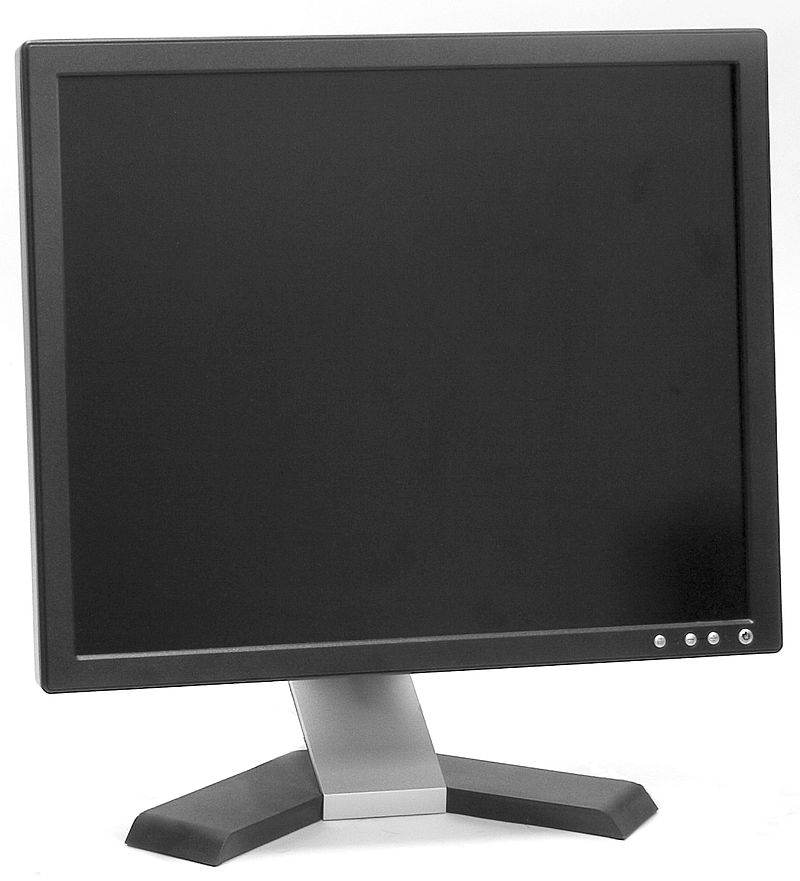
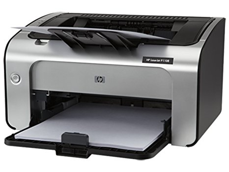
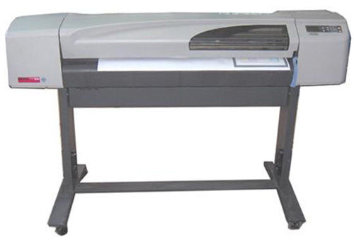
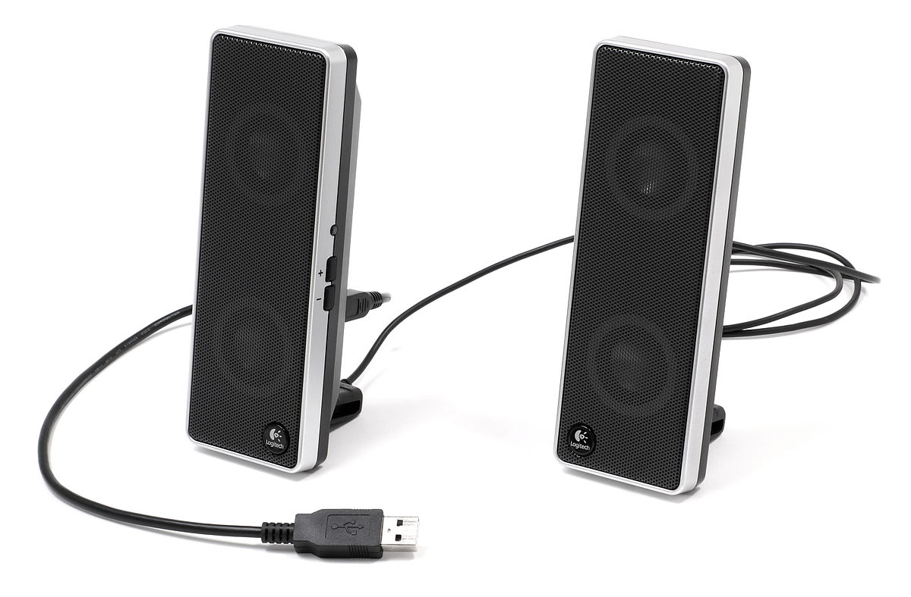

Monitor
Monitor are output drive of computer. Monitors are used to display any types of data or information in pictorial form from computer. They are soft copy output device. There are different types of monitors such as LCD, CRT etc. A monitor usually comprises the display device, circuitry, casing, and power supply. The display device in modern monitors is typically a thin film transistor liquid crystal display (TFT-LCD) with LED back lighting having replaced cold-cathode fluorescent lamp (CCFL) back lighting. Older monitors used a cathode ray tube (CRT). Monitors are connected to the computer via VGA, Digital Visual Interface (DVI), HDMI, DisplayPort, Thunderbolt, low-voltage differential signaling (LVDS) or other proprietary connectors and signals. Originally, computer monitors were used for data processing while television receivers were used for entertainment.
Printer
In computing, a printer is a peripheral device which makes a persistent human-readable representation of graphics or text on paper. The first computer printer designed was a mechanically driven apparatus by Charles Babbage for his difference engine in the 19th century; however, his mechanical printer design was not built until 2000. The first electronic printer was the EP-101, invented by Japanese company Epson and released in 1968.In the 1980s were daisy wheel systems similar to typewriters, line printers that produced similar output but at much higher speed, and dot matrix systems that could mix text and graphics but produced relatively low-quality output. The plotter was used for those requiring high quality line art like blueprints.
Plotter
The plotter is a computer printer for printing vector graphics. Plotters draw pictures on paper using a pen. In the past, plotters were used in applications such as computer-aided design, as they were able to produce line drawings much faster and of a higher quality than contemporary conventional printers, and small desktop plotters were often used for business graphics. Although they retained a niche for producing very large drawings for many years, plotters have now largely been replaced by wide-format conventional printers.
Speaker
Computer speakers, or multimedia speakers, are speakers sold for use with computers, although usually capable of other audio uses, e.g. for an MP3 player. Most such speakers have an internal amplifier and consequently require a power source, which may be by a mains power supply often via an AC adapter, batteries, or a USB port (able to supply no more than 2.5W DC, 500mA at 5V). The signal input connector is often a 3.5 mm jack plug (usually color-coded lime green per the PC 99 standard); RCA connectors are sometimes used, and a USB port may supply both signal and power (requiring additional circuitry, and only suitable for use with a computer). Battery-powered wireless Bluetooth speakers require no connections at all.